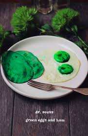

Home
Green Eggs and Ham

Green Eggs and Ham served sunny side up
Inspired from the Dr. Seuss story,
of the same name, this dish is a hearty breakfast
made silly with the shades of green. Don't be fooled,
we aren't preparing food well past its expiration, it'll be fresh
as ever.
Ingredients
- Two eggs
- One slice of ham
- Green food coloring
Steps
- Crack two eggs over a pan with heat set to low
- Add green food coloring to eggs
- Plate eggs once Sunny Side Up
- Cook ham on medium heat
- Add food coloring to one side of ham
- Flip ham to cook evenly
- Add food coloring
- Plate ham with eggs once fully cooked
- Enjoy!